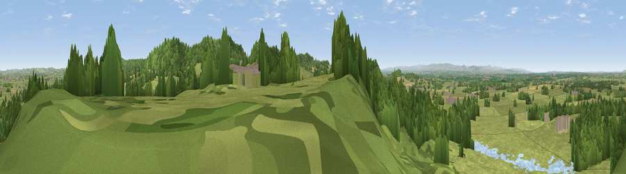

Viewpoint near Harthill
#14379 in England · top 47% of its area beats it · near HarthillThe view, rendered

A 360° render of this exact spot computed from the terrain model, tree cover and land cover — summer colours, afternoon light, calibrated against photographs of famous viewpoints. Real trees, hedges and buildings will differ in detail.
The panorama
Grey silhouette: terrain skyline in each direction (720 bearings, Earth curvature and refraction included). Dashed green: skyline with trees (+15 m) and buildings (+8 m) as obstacles. Blue strip: how far the ground is visible on each bearing.
Where the view opens
Wedge length = distance to the farthest visible ground on that bearing (vegetation-aware). Rings at 10, 25 and 50 km.
What fills the view
65% grassland · 26% woodland · 6% cropland · 2% water · 2% built-up
Angular shares of the visible panorama (visual magnitude), not map area. Landscape diversity 0.41 (0–1 Shannon).
Key numbers
More beautiful places nearby
The staircase of upgrades: each row has a higher view potential than everything closer. Driving times are estimates from straight-line distance, calibrated against real road routing — check an actual route before setting out.
| Place | Direction | Drive | Score |
|---|---|---|---|
| Viewpoint near Harthill | ESE · 2 km | ~5 min | 80.5 |
| Viewpoint near Halfway House | SSW · 47 km | ~67 min | 83.3 |
| Viewpoint near Little Wenlock | SSE · 49 km | ~70 min | 84.2 |
| The Wrekin | SSE · 50 km | ~71 min | 85.0 |
| Viewpoint near Little Wenlock | SSE · 50 km | ~71 min | 86.6 |
| North Hill | SSE · 113 km | ~137 min | 86.8 |
| Worcestershire Beacon | SSE · 114 km | ~139 min | 87.1 |
| Viewpoint near Cartmel | N · 124 km | ~149 min | 87.2 |
53.09858, -2.75453 · source: screening · position refined by local search. Computed location — check access rights before visiting.